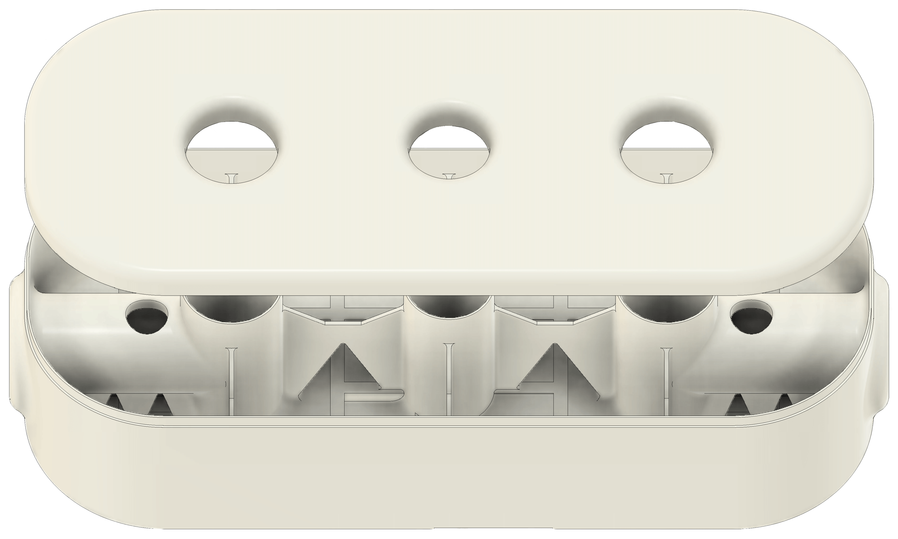
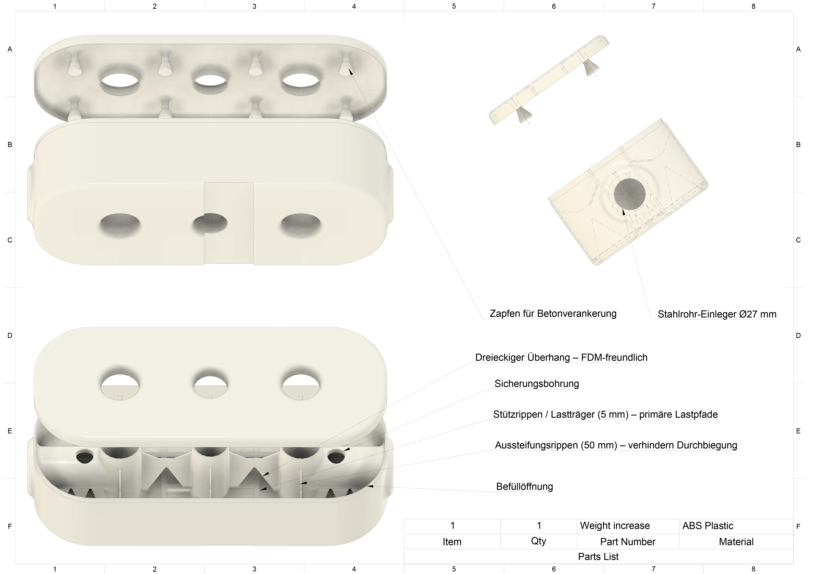

Gewichtserweiterung
Von der Idee zur Umsetzung:
eine nahezuhe Trainingsgewichtsverdopplung
– präzise geplant und dauerhaft belastbar.
Inhaltsverzeichnis

1. Einleitung – Motivation & Zielsetzung
Das hauseigene Gym meines Vaters verfügt über eine klassische Kabelzugstation mit vertikal geführtem Gewichtsstapel. Die Anlage arbeitet mit einem Seilzug und Umlenkrollen, wobei das Kabel im Standardbetrieb von oben nach unten geführt wird. Das System besteht aus rechteckigen Gussplatten à 5 kg, die über Führungsstangen linear nach oben bewegt werden. Mit ursprünglich neun Platten war ein maximales Trainingsgewicht von 45 kg möglich – für zahlreiche Übungen zu wenig, um langfristig Fortschritte zu erzielen.
Die naheliegende Lösung war eine Erweiterung des bestehenden Stapels. Ziel war jedoch nicht nur eine einfache Erhöhung des Gesamtgewichts, sondern die Entwicklung eines modularen Systems, das funktional, robust und zugleich variabel nutzbar ist. Das Ergebnis ist ein Zusatzmodul, das drei Plattenhöhen (75 mm) umfasst, mit Beton gefüllt wird und zusätzlich eine Vorrichtung zur Aufnahme von Hantelscheiben bietet.
Mit diesem Aufbau steigert sich das mögliche Trainingsgewicht von 45 kg auf rund 80 kg – eine nahezu verdoppelte Last. Während der praktische Nutzen im Vordergrund stand, bot die Konstruktion zugleich die Möglichkeit, neue Werkstoffe und Fertigungsmethoden einzusetzen, insbesondere die Kombination von Betonfüllungen mit 3D-gedruckten Strukturen.

2. Konzept & Konstruktion im CAD
Die Planung erfolgte vollständig in Fusion 360, wobei die Konstruktion auf einen modularen Aufbau ausgelegt wurde. Das Zusatzgewicht besteht aus zwei Bauteilhälften (Ober- und Unterteil), die nach dem Druck mit Beton verfüllt werden. Anstelle von Schrauben sorgen massive Kunststoffnasen, die beim Zusammenstecken ins Betonbett hineinragen, für eine kraftschlüssige Verbindung. Dieses Prinzip erhöht die Stabilität, ohne dass zusätzliche Verbindungselemente erforderlich sind.
Gedruckt wurde das Modul aus PLA. Zwar wäre ABS durch höhere Zähigkeit ideal gewesen, doch PLA bot in diesem Anwendungsfall entscheidende Vorteile: Da weder UV-Strahlung noch Feuchtigkeit relevant sind, spielte die geringere Witterungsbeständigkeit keine Rolle. Zudem ließ sich PLA mit meinem FDM-Drucker am zuverlässigsten verarbeiten. Gedruckt wurde mit 100 % Infill, um die Materialdichte zu maximieren und das Gewicht pro Volumen zu erhöhen.
Ein besonderes Konstruktionsdetail ist die Aufnahme für Stahlrohre mit 27 mm Durchmesser. Durch aufgeschobene Hülsen aus PLA ergibt sich ein Außendurchmesser von 30 mm, sodass handelsübliche Scheiben genutzt werden können. Diese Lösung kombiniert Stabilität mit einer einheitlichen Optik. Obwohl mein Vater inzwischen überwiegend mit 50 mm-Scheiben trainiert, war deren Einsatz hier nicht praktikabel, da die Kabelzugstation wandnah montiert ist und große Scheiben dort keinen Platz fänden.
Die Konstruktion stellt somit eine technisch saubere, zugleich pragmatische Lösung dar: robust genug, um den Belastungen im Training standzuhalten, und flexibel genug, um mit zusätzlichem Gewicht erweitert zu werden.
3. Konstruktive Besonderheiten & Druckstrategie
Das Zusatzgewicht basiert auf einer konsequent durchdachten Leichtbau-Struktur, die sowohl die Druckbarkeit als auch die spätere Stabilität berücksichtigt. Alle Wände, sowohl die Außenhülle als auch das innere Skelett, besitzen eine Wandstärke von 1,6 mm. Das Skelett teilt das Modul in mehrere Abschnitte und ist im mittleren Bereich 35 bis 50 mm hoch. Darunter befinden sich großflächige dreieckige Ausschnitte, die ohne Support gedruckt werden können. Diese Lösung reduziert nicht nur den Materialverbrauch, sondern erleichtert auch die Betonverfüllung und sorgt für eine gleichmäßige Lastverteilung.
Die Verstärkungen beschränken sich nicht nur auf den mittleren Bereich: Auch am Boden wurden zusätzliche Streben integriert, die wie kleine Auflager fungieren und das Gewicht beim Anheben des gesamten Moduls gleichmäßig aufnehmen. Im oberen Bereich finden sich wiederum abgewandelte Dreiecksöffnungen, die zusätzliche Stabilität nach außen schaffen, ohne unnötig Material zu verbrauchen.
Besonders die Wahl der dreieckigen Geometrie erwies sich als sinnvoll. Dreiecke zählen zu den stabilsten Konstruktionsformen, da sie Kräfte optimal ableiten und so eine Verformung des Materials verhindern. Damit ist das Skelett nicht nur ein Hilfsmittel für die Druckbarkeit, sondern ein zentrales Bauteil für die Gesamtfestigkeit.
4. Mechanische Stabilität & Belastungstests
Bereits beim ersten praktischen Einsatz zeigte sich, dass das Modul die gewünschte Stabilität zuverlässig erreicht. Trotz einer Gesamtlast von rund 80 kg im Training hielt die Konstruktion allen Belastungen stand.
Im Vorfeld lagen die größten Bedenken bei zwei kritischen Punkten:
- der unteren Außenkante der Stahlrohraufnahme, an der das Gewicht über den Hebelarm wirkt,
- der oberen Innenkante, an der die eingesetzte Stange direkt aufliegt.
Von der Seite betrachtet wirkt die gesamte Konstruktion wie eine Wippe: Der Drehpunkt liegt an der unteren Kante, während auf der gegenüberliegenden Innenseite hohe Kräfte eingeleitet werden. Durch die Hebelwirkung – 60 mm Einstecktiefe im Inneren und 120 mm Überstand nach außen – entstehen erhebliche Momente, die besonders bei den dynamischen Belastungen im Training kritisch werden.
Die Lösung bestand in einer gezielten Kombination aus Betonfüllung und Stahlverstärkung im Inneren, wodurch die obere Auflagefläche dauerhaft stabilisiert wurde. Für den unteren Drehpunkt wurde die Konstruktion mit zusätzlichen dreieckigen Verstärkungen versehen, um die auftretenden Kräfte möglichst großflächig einzuleiten.
Diese Maßnahmen haben sich in der Praxis bewährt: Trotz wiederholter Belastung mit bis zu 15 kg Zusatzgewicht pro Seite blieb die Struktur unverändert. Auch die dynamischen Kräfte, die durch die ständige Beschleunigung und Abbremsung beim Training entstehen, führten zu keinen sichtbaren Schäden oder Verformungen. Das zeigt, dass die präzise Planung im CAD und die gezielten Verstärkungen in der Realität ihre volle Wirkung entfalten.
5. Füllung mit Beton & Materialwahl
Für die Verfüllung kam handelsüblicher Beton zum Einsatz, der bewusst sehr dünnflüssig angemischt wurde, um auch schwer zugängliche Bereiche zuverlässig zu erreichen. Zusätzlich wurden alte Nägel, Schrauben und Kugellager in das Modul eingebracht. Sie fungieren als Gewichtsträger, erhöhen die Dichte und sorgen gleichzeitig für eine bessere Verklammerung zwischen Kunststoffhülle und Betonkern.
In der Praxis stellte sich das Einfüllen komplexer dar als zunächst angenommen. Besonders unterhalb der Aufnahmen für die seitlichen Stahlrohre befand sich eine massive Unterkonstruktion, die nur schwer erreichbar war. Mithilfe von Schütteln, Stäben und Pinseln konnte der Beton jedoch gleichmäßig verteilt werden. Ein weiteres Problem ergab sich durch die abgerundeten Kanten des Oberteils: Hätte man das Unterteil plan befüllt, wäre ein Hohlraum zwischen Deckel und Füllung entstanden. Die Lösung bestand darin, den Beton mit einem leichten „Überstand“ einzubringen, sodass der Deckel beim Einsetzen den Überschuss verdichtete und den Hohlraum minimierte.
Trotz dieser Maßnahmen ist nicht von einer vollständig luftblasenfreien Verfüllung auszugehen – der Hohlraumanteil wurde aber auf ein Minimum reduziert. Ein alternatives Verfahren wäre eine Nachfüllöffnung im Deckel gewesen, diese wurde jedoch aus ästhetischen Gründen verworfen.
Besonders wichtig war die Orientierung der eingebrachten Metallteile. Sie wurden gitterartig angeordnet, sodass sich eine durchgehende Struktur ergibt, die das Modul insbesondere auf den langen Seiten zusätzlich stabilisiert. Damit wurde ein Verbundwerkstoff geschaffen, bei dem Kunststoff, Beton und Metall in Kombination deutlich höhere Lasten tragen können, als es jedes Material allein vermögen würde.

6. Ergebnisse & Praxiseinsatz
Das Modul ist inzwischen fest in den Trainingsalltag integriert und funktioniert zuverlässig. Mit der Erweiterung konnte das Gesamtgewicht von ursprünglich 45 kg auf rund 80 kg gesteigert werden, was für viele Übungen eine neue Belastungsstufe eröffnet.
Im praktischen Einsatz zeigte sich, dass die größten Befürchtungen unbegründet waren: Durch eine symmetrische Befüllung mit Schrauben und Nägeln konnte einseitige Lastverteilung vermieden werden. Wäre dies nicht gelungen, hätte sich die Reibung an den Führungsstangen spürbar erhöht, da der Stapel bei jedem Zug leicht verkanten würde. Dank der sorgfältigen Planung läuft das Modul jedoch ebenso reibungsarm wie die ursprünglichen Gussplatten.
Das Trainingsgefühl selbst bleibt unverändert – die Bewegungen sind gleichmäßig, der einzige Unterschied liegt in der höheren Gesamtmasse. Auch akustisch fällt das Modul nicht ins Gewicht: Während die originalen Stahlplatten beim Aufsetzen deutlich hörbar sind, arbeitet die Kombination aus Kunststoff und Beton nahezu geräuschlos.
Eine Einschränkung ergibt sich lediglich durch den verfügbaren Raum: An den äußeren Aufnahmen können nicht alle Scheiben genutzt werden, da große Durchmesser an der Wand anschlagen würden. Mit den vorgesehenen 5-kg-Scheiben ist dies jedoch kein Problem, sodass die Erweiterung im praktischen Betrieb voll einsatzfähig bleibt.